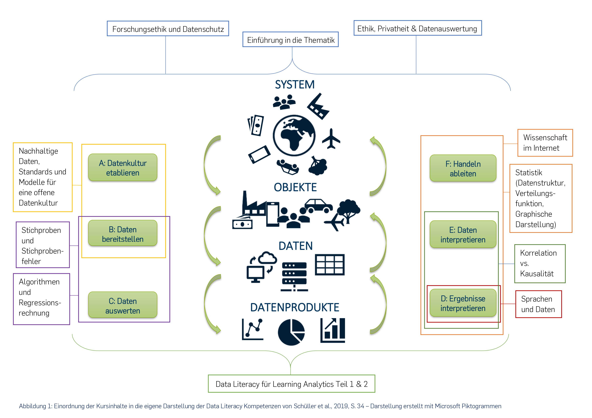
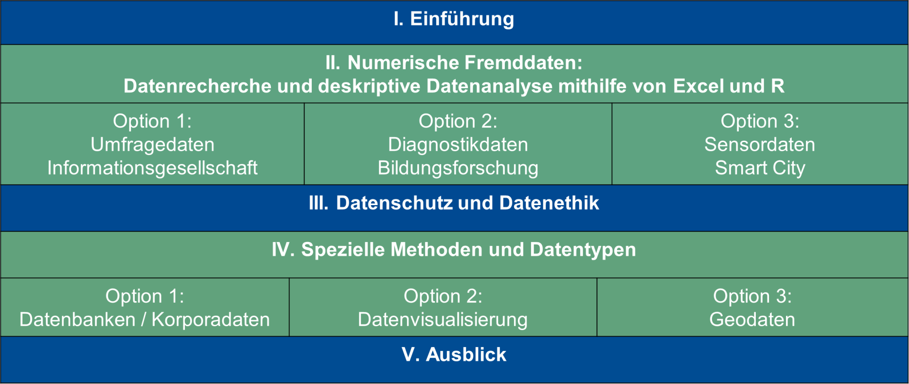
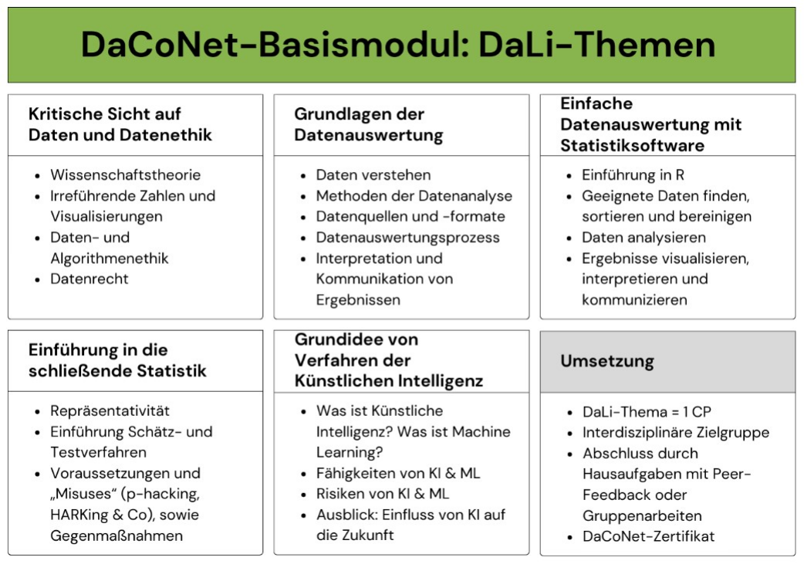

Entwicklung von Data-Literacy-Basiskursen
Ein Ansatz zur Datenkompetenzvermittlung für heterogene Zielgruppen an Hochschulen
Toolbeschreibung
Das Verständnis von Daten, das heißt, was man mit ihnen tun will, kann, darf und soll, ist eine Kompetenz, deren Vermittlung sich viele Hochschulen zum Ziel gesetzt haben. Im Jahre 2021 bekannten sich hierzu verschiedenste Institutionen, Hochschulen und Einzelpersonen durch die Verabschiedung der Data-Literacy-Charta. Diese beschreibt Leitprinzipien für die Vermittlung von Data-Literacy-Kompetenzen. Das erste Prinzip besagt, dass allen Menschen auf die durch Daten getriebene Welt vorbereitet werden müssen, um mündiges Handeln und Entscheiden zu ermöglichen (Schüller et al., 2021). Werden jedoch an Hochschulen „alle“ Studierenden betrachtet, die durch diese Programme adressiert werden sollen, zeigt sich eine stark heterogene Gruppe: Ihre unterschiedlichen Vorkenntnisse und Interessen ergeben besondere Herausforderungen in Bezug auf die Etablierung von Basisangeboten und unterstreichen die Notwendigkeit, sich mit dem Kompetenzniveau dieser Gruppen zu befassen, das stark von der Zielgruppe der Angebote abhängig ist.
Grundlegende Angebote, die möglichst viele Studierendengruppen gleichermaßen ansprechen sollen, sind Online-Selbstlernkurse, die fächerübergreifend besucht werden können und einen weitreichenden Zugang zu Basiskompetenzen an der Hochschule ermöglichen. Dies entspricht ganz dem Sinne des allgemeinen mündigen Bürgers nach der Data-Literacy-Charta (Schüller et al., 2021). Dieser Ansatz bietet allen Studierenden die Möglichkeit, sich Data-Literacy-Kompetenzen anzueignen und fungiert gleichzeitig als Basis für weiterführende Angebote, welche auch fachspezifisch angeboten werden können (vgl. Fuchs et al., 2023). Im Falle der Universitätsallianz Ruhr (UA Ruhr), bestehend aus Ruhr-Universität Bochum, Technische Universität Dortmund und Universität Duisburg-Essen, werden universitätsweite Basiskurse eingesetzt, die in unterschiedlichen Ausführungen als Selbstlernangebot konzipiert wurden. Die Kurse wurden unter Berücksichtigung der Data -Literacy-Kompetenzmatrix von Ridsdale et al. (2015) entwickelt. Darin wird Datenkompetenz als die Fähigkeit beschrieben, Daten sammeln, verwalten, auswerten und kritisch nutzen zu können. Die Kompetenzen werden in die Stufen der „Konzeptuellen Kompetenzen“, der „Kernkompetenzen“ und der „Fortgeschrittenen Kompetenzen“ unterteilt.
Grundlage für die Konzeption der Kurse sind verschiedene Personas. Dabei handelt es sich um fiktive Studierende, welche stellvertretend für eine Zielgruppe stehen. Sie ermöglichen eine komprimierte Darstellung und helfen mögliche Ansprüche und Hürden für verschiedene Studierende zu beschreiben. Sie tragen dazu bei, zu entscheiden, welche Kompetenzstufen relevant sind und welche Lernziele sich hierdurch ergeben. Im Falle der Basiskurse in der UA Ruhr stellten sich zwei Personas als relevant heraus, die sich in ihrem Kompetenzniveau unterscheiden. Bei Persona 1 handelt es sich um Studierende, die wenig Vorkenntnisse im Umgang mit Daten haben. Dies kann beispielsweise aus einer individuellen Abneigung gegenüber mathematischen und quantifizierenden Verfahren oder aber auch aus den Lehrangeboten und Schwerpunktsetzungen des gewählten Studienganges resultieren. Im Kontrast dazu hat Persona 2 in ihrem Studium schon Erfahrungen mit Daten und ist sich der Relevanz von Data-Literacy-Kompetenzen bewusst.
Betrachtet man die Kompetenzmatrix in Bezug auf die Personas, zeigen sich Unterschiede in den Lernzielen, die sich auch in den Basiskursen widerspiegeln müssen. Beispielhaft können die Lernziele im Themenfeld „Datenmanipulation“ betrachtet werden: Hier ist das Lernziel für Persona 1, ein allgemeines Verständnis der Datenmanipulation zu entwickeln, während Persona 2 weitergehend die Möglichkeit erhält, sich selbst an Daten auszuprobieren (Weinert & Schwarz, 2023).
Die Konzeptionierung von Personas und die Definition ihrer Lernziele, abgestimmt auf die einzelnen Data-Literacy-Kompetenzen nach Ridsdale et al. (2015) sind in die Weiterentwicklung der Basiskurse eingeflossen. Sie ermöglichen eine Erweiterung der Kursinhalte um die für die Zielgruppen relevanten Inhalte und gleichzeitig eine Fokussierung des Lerninhaltes auf die für die Personas ausschlaggebenden Lernziele. Weitergehend bieten sie einen Rahmen, um die Einstellung von Studierenden gegenüber Kursinhalten zu verstehen und sie zielgerichtet anzuleiten und zu adressieren.
Lerninhalte & Methoden
Nachdem eingangs dargestellt wurde, nach welchen Personas die drei Universitäten in Bezug auf die Basiskurse differenzieren, wird nun der Fokus auf die unterschiedlichen Lerninhalte und -methoden gelegt.
Während die Hochschule Bochum ihre Lerninhalte auf Persona 1 zugeschnitten vermittelt, richten die Technische Universität Dortmund und die Universität Duisburg-Essen ihre Lerninhalte sowohl auf Persona 1 als auch auf Persona 2 aus. Dieser Unterschied in der Lehre ist auf die Erfahrungen der Lehrenden und das Feedback der Studierenden in den letzten Perioden zurückzuführen. Die Ruhr Universität Bochum findet ihre Studierenden vor allem in den sozialen und pädagogischen Studiengängen, die TU Dortmund und die Universität Duisburg-Essen primär in den technischen Studiengängen.
An der Ruhr-Universität Bochum werden Themenschwerpunkte innerhalb der Data Literacy wie künstliche Intelligenz, Algorithmen, Forschungsethik, Datenschutz, wissenschafts- und datenbezogene Kommunikation im Internet, Datengenerierung, Datentypen, Datenverfügbarkeit sowie Analyseverfahren und deren Einsatzmöglichkeiten einschließlich Data Mining behandelt. Diese Themengebiete (Abbildung 1) sind in zwölf Lernpakete, bestehend aus Lehrvideos, Abgaben, Multiple Choice-Tests (MC-Tests) und Zusatzmaterial geschnürt. Dabei werden die auf Persona 1 zugeschnittenen Inhalte mit vielen realitätsnahen Anwendungsbeispielen untermauert, ohne jeweils auf mathematische Verfahren oder technisch komplexe Sachverhalte zurückgreifen zu müssen. Die Vertiefung des Lernstoffs erfolgt durch offene Fragestellungen, die die Studierenden dazu anregen, das Gelernte zu reflektieren und auf ihr eigenes Studienfach oder Interessengebiet anzuwenden. Ihr eigenständiges Nachdenken wird durch die Bereitstellung von Musterlösungen unterstützt, da sie ihre Lösungen selbst kontrollieren müssen und diese in Foren mit Lehrenden und Mitstudierenden diskutieren können.

Die Universität Duisburg-Essen gliedert den Basiskurs „Discover the Data“ in fünf Bereiche mit teilweise mehreren Wahlmöglichkeiten für die Studierenden mit Bezug zu den vorher beschriebenen Personas (Abbildung 2). Zunächst werden einführende Grundlagen zur Data Literacy vermittelt. Anschließend wird im ersten großen Themenbereich „Numerische Fremddaten: Datenrecherche und deskriptive Datenanalyse mit Excel und R“ zwischen den drei Optionen 1) Umfragedaten (Informationsgesellschaft), 2) diagnostische Daten (Bildungsforschung) und 3) Sensordaten (Smart City) gewählt. Der dritte Themenbereich vermittelt Wissen zu Datenschutz und Datenethik. Den zweiten großen Themenblock bildet Bereich 4, „Spezielle Methoden und Datentypen“. Auch hier können die Studierenden zwischen den Optionen 1) Datenbanken/Korpora, 2) Datenvisualisierung und 3) Geodaten wählen. Abgerundet wird der Basiskurs durch einen kurzen Ausblick, der sich mit den Themen Künstliche Intelligenz und Forschungsdatenmanagement beschäftigt. Zur Vertiefung der Lerninhalte werden Learn R- und Excel-Tutorials sowie Online-Tutorials angeboten.

Die Technische Universität Dortmund setzt in ihrem Basiskurs „Data Literacy (DaLi)“ Schwerpunkte bei Themen wie kritischer Umgang mit Daten und Datenethik, Grundlagen der Datenauswertung, einfache Datenauswertung mit Statistiksoftware, Einführung in die schließende Statistik, Grundidee von Verfahren der Künstlichen Intelligenz und Forschungsdatenmanagement (Abbildung 3). Diese Lerninhalte werden den Studierenden durch Online-Lehrvideos und Quiz vermittelt. Die Festigung des Wissens erfolgt durch auf die Themen zugeschnittene Pflichtabgaben, die teils in Einzel- und teils in Gruppenarbeit durchgeführt und mittels Peer Review bewertet werden. Bei Bedarf erfolgt eine zusätzliche Bewertung durch die Lehrenden. Zusätzlich bietet die TU Dortmund den Studierenden Learn R Tutorials und Onlinefragestunden an, sodass alle Studierenden am Ende des Kurses in der Lage sind, eine selbst gewählte Fragestellung mit frei verfügbaren Daten eigenständig zu beantworten.

Erkenntnisse & Erfahrungen
Im Laufe der Entwicklung und Durchführung der Onlineselbstlernkurse wurden einige wichtige Erkenntnisse gewonnen. Wie bereits erwähnt, ist es eine Herausforderung einzuschätzen, welche Kompetenzstufe die heterogene Studierendenschaft hat. Da die Kurse fächerübergreifend sind, zeigt sich, dass die Studierenden unterschiedliche Vorkenntnisse und Erfahrungen im Umgang mit Daten haben. Der Kurs muss daher so gestaltet werden, dass er auf die Bedürfnisse und Kenntnisse dieser heterogenen Gruppe eingeht.
An dieser Stelle sind insbesondere fachliche Wahlmöglichkeiten für verschiedene Personas (zum Beispiel Anfänger:innen, Fortgeschrittene, Expert:innen) sinnvoll, um den unterschiedlichen Bedürfnissen der Studierenden gerecht zu werden. Spezifische Ergänzungskurse können ebenfalls dazu beitragen, Studierende unterschiedlicher Kompetenzstufen bedarfsorientierter zu schulen, damit sie von den Basiskursen bestmöglich profitieren können (Fuchs et al., 2023). Des Weiteren erwies es sich im Bereich der praktischen Aufgaben als sehr nützlich, den Studierenden stärkere und kleinschrittige Anleitungen zur Verfügung zu stellen. Studierende mit wenig Datenerfahrungen dienen diese Erklärungen als große Unterstützung bei der Bearbeitung der Aufgaben. Gleichzeitig können Studierende, die bereits über Vorkenntnisse verfügen, bei Bedarf schnell ihr Wissen auffrischen oder diese Erklärungen überspringen.
Die niedrigschwellige Möglichkeit, sich mit Daten zu beschäftigen, ist für viele Studierende zwar eine Bereicherung, dennoch können vor allem statistische Methoden in Excel und R trotz einfacher Einleitung abschreckend wirken, da viele Studierende Hemmungen im Umgang mit Zahlen haben und teilweise im Studium nicht viele Berührungspunkte damit haben. An dieser Stelle ist es auch wichtig auf die Fragen und Probleme der Studierenden einzugehen und ihnen Ansprechpersonen zur Verfügung zu stellen, beispielsweise über Foren oder E-Mail. Es muss sichergestellt werden, dass die Studierenden auf angemessene Weise Feedback und Unterstützung erhalten können. Hier konnte beobachtet werden, dass eine offene Kommunikation und ein zusätzliches Angebot von Sprechstunden oder Tutorien Studierenden dabei helfen können, Hemmschwellen leichter zu überwinden und bei Schwierigkeiten oder anfänglichen Hürden mit den Datenanalyse-Tools Unterstützung zu finden.
Ein selbstgesteuerter Kurs erfordert ein hohes Maß an Motivation und Engagement seitens der Studierenden. Es kann schwierig sein, diese Motivation aufrechtzuerhalten, insbesondere wenn es keine festen Kurszeiten gibt und die Studierenden sich selbst organisieren müssen. So kann es vorkommen, dass zum Beispiel beim Peer-Review-Verfahren einige Studierende die Vorgaben oder Testfristen nicht einhalten. Hier ist es sinnvoll, den Selbstlernkurs mit regelmäßigen Erinnerungen zu versehen, um das kontinuierliche Lernen zu unterstützen. Zudem muss gewährleistet werden, dass die Studierenden auf angemessene Weise überwacht und bewertet werden, um sicherzustellen, dass sie die erforderlichen Fähigkeiten und Kenntnisse erwerben.
Der (Erfahrungs-)Austausch innerhalb der drei Hochschulen hat verdeutlicht, dass es unter einer Allianz einfacher ist, die Bedarfe der Studierenden unter Zuhilfenahme der Personas einzuschätzen und in diesem Kontext den ersten Schritt beim Teilen und Wiederverwenden von Open Educational Resources (OER) zu gehen. Des Weiteren zeigt es die weitreichenden Möglichkeiten auf, die das Rahmenwerk der Data-Literacy-Personas eröffnet, um sich in einem erweiterten Pool an OER-Materialien auf die eigene Zielgruppe und das eigene Angebot zugeschnitten zurechtzufinden.
Autor:innenprofile
Derya Dincer studiert Soziologie (M.A.) in Duisburg mit dem Schwerpunkt Arbeit, Beruf und Organisation. Sie arbeitet am Zentrum für Hochschulqualitätsentwicklung (ZHQE). Hier wirkt sie unter anderem in dem Projekt DataCampus UDE mit und unterstützt das Team in dem Bereich des Basiskurses “Discover the Data”.
Dr. Ebru Ekici hat an der Universität Duisburg-Essen (UDE) Physik studiert und darin promoviert. Seit Januar 2021 arbeitet sie als Wissenschaftliche Mitarbeiterin im DataCampus UDE und betreut den Basiskurs „Discover the Data“.
Henrik Hardering studiert Wirtschaftsingenieurwesen in Dortmund. Zuvor sammelte er während seines Statistik Studiums weitreichende Kompetenzen in der Datenanalyse. Heute arbeitet er als Studentische Hilfskraft im Data Literacy Programm “Data Competence Network” (DaCoNet), welches am TU Dortmund-Center for Data Science and Simulation (DoDaS) angesiedelt ist.
Tabea Schwarz (M.Sc.) studierte Wirtschaftswissenschaft an der Ruhr-Universität Bochum. Ihre Schwerpunkte lagen in den Bereichen theoretische Statistik, Spieltheorie und Führungsforschung. Während ihres Studiums arbeitete sie als Mediendidaktikerin im Projekt Data.Literacy@RUB am Methodenzentrum und setzt diese Tätigkeit nun nach ihrem Abschluss im Projekt „Data Literacy für Learning Analytics” fort.
Dr. Henrike Weinert hat an der Technischen Universität Dortmund Statistik studiert und darin promoviert. Sie war als wissenschaftliche Mitarbeiterin am Institut für mathematische Statistik und industrielle Anwendungen tätig (MSInd), bevor sie an das Institut zur Erforschung und Entwicklung des Mathematikunterrichts (IEEM) wechselte. Seit Juli 2020 ist sie wissenschaftliche Mitarbeiterin im Data Literacy Programm “Data Competence Network” (DaCoNet), welches am TU Dortmund - Center for Data Science and Simulation (DoDaS) angesiedelt ist.
Förderhinweise: Die hier vorgestellten Projekte werden durch das Ministerium für Kultur und Wissenschaft des Landes Nordrhein-Westfalen in Kooperation mit dem Stifterverband in dem Programm „Data Literacy Education.nrw“ gefördert.